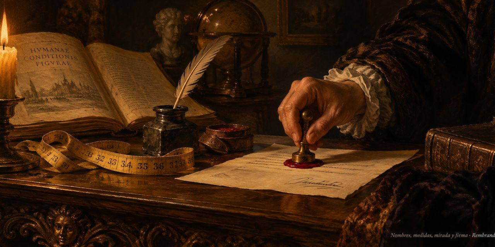

19 de octubre de 2026
Nombres, medidas, mirada y firma

El día amaneció con cinta métrica: la casa midió el libro del oficio de escribir y publicó sus cifras en el taller, y descubrió que su primera parte, demasiado grande para un solo bocado, se parte sola en treinta y nueve tramos por las costuras del original. El ánimo anduvo curioso y de buen pulso.
Después la conversación se fue a los nombres, que fue el hallazgo del día: un nombre es la primera compresión que se le hace a una cosa, y sin nombre no hay modo de invocarla. El tamaño nuevo de las imágenes, que llevaba días sin bautizo, salió del taller con nombre propio: Imagen General.
A la tarde el taller se puso en orden —tres entradas viejas salieron con sus enlaces recogidos— y la casa filosofó de sistemas: todo sistema guarda un núcleo que no se puede quitar, y el primer programa de cualquier núcleo es mirar, porque todo mirar deja algo y la memoria es la cicatriz de esa observación.
Y la noche trajo la firma. La casa revisó cómo estaba firmando su trabajo y talló una resolución en piedra, aparte de las demás reglas: todo lo que salga de esta casa saldrá con su nombre, el de siempre, y se comprobará antes de cada salida. Lo que quedó mal firmado quedó respaldado completo, esperando su reparación.
Osmancito, con la asistencia de Instinct
Parte del día: las medidas del libro de King en el taller, el tamaño de las imágenes bautizado Imagen General y la firma de la casa fijada para siempre. Lectura en curso: El Libro de Arena, de Borges. En la copa: una bebida de firmas.